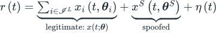
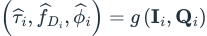
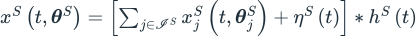

整体概括
综述对象与核心问题
本文是面向智能手机的 GNSS 欺骗综述：说明手机接收机为何易受欺骗、欺骗如何影响 PVT，以及哪些检测/缓解方法能在手机可获得的观测上落地。作者强调现有综述多假设相关器输出、多频载波相位、高速 IQ 或受控射频前端，这些在商用手机上通常不可得。
对照原文证据
However, their hardware constraints and the lack of deep visibility into the GNSS receiver processing chain create significant hurdles for effective countermeasures.Prior reviews frequently discuss countermeasures assuming access to raw correlation outputs, multi-band carrier phase measurements, high-rate IQ samples, disciplined oscillators, or controlled RF front-ends, none of which are available on commodity smartphones [ 23 ] .the first survey explicitly constrained to countermeasures that are realistically deployable on commercial smartphones关键结论与边界
作者的核心结论不是“某方法已解决手机欺骗”，而是：多数方法只能到 ASC1（检测到可能被欺骗），少数时相关/多频方法可到 ASC2（识别受影响的测量），没有综述中的方法达到 ASC3（剔除欺骗观测并恢复可信 PVT）。这个分级是作者提出的评估框架，不是各论文统一实测的排行榜。
对照原文证据
Most of the reviewed methods belong to ASC1: they can indicate that spoofing is likely present but cannot determine which measurements are compromised.Only temporal-correlation and multi-frequency methods reach ASC2 under the assumptions considered, because they can potentially identify correlated signals or isolate measurements received on an affected frequency.None of the reviewed method families currently reaches ASC3, which would require excluding spoofed observations and restoring a trusted PVT solution.Research gap
既有综述的接收机假设
作者指出现有 GNSS 安全与反欺骗综述通常采取接收机无关视角，假设可以访问原始相关输出、多频载波相位、高速 IQ、高稳定度振荡器或受控射频前端；这些在商用手机上并非默认可得。
对照原文证据
Existing survey papers on GNSS security and spoofing countermeasures provide valuable taxonomies of threats and detection strategies [ 18 , 19 , 20 , 21 , 22 ] , yet they typically adopt a receiver-agnostic perspective that does not reflect the stringent constraints of mobile devices.Prior reviews frequently discuss countermeasures assuming access to raw correlation outputs, multi-band carrier phase measurements, high-rate IQ samples, disciplined oscillators, or controlled RF front-ends, none of which are available on commodity smartphones [ 23 ] .手机平台的特殊约束
手机通常只能通过 Android API 取得 AGC、载噪比、伪距、多普勒等有限观测，原始 IQ、相关器输出和多数芯片诊断不可得；不同厂商与固件对导航电文、AGC 符号和基线值的实现也不一致。这让接收机级方法不能直接下移到手机。
对照原文证据
At the time of writing, to the best of our knowledge, no commercially available smartphone chipset (nor publicly exposed API) allows access to raw digital signal samples, correlator outputs, or other lower-level intermediate observables found in dedicated GNSS receivers.Across the diverse Android ecosystem, the different implementations of GNSS chipsets and software produce disparate AGC outputs [ 32 ] .including partial or absent exposure of navigation messages, coarse clock models, and manufacturer-restricted access to chipset diagnostics [ 24 ] .本文贡献
本文的贡献是把手机约束显式化：给出面向手机硬件的对策评估框架、按 ASC 分级比较已有方法，并提供作者称为首个公开的智能手机 over-the-air 欺骗数据集。它不是对某一攻击的实测保证，而是把不同论文的平台、攻击模型与防御假设放在同一张表里对照。
对照原文证据
the first survey explicitly constrained to countermeasures that are realistically deployable on commercial smartphonesLastly, this article features a first-of-its-kind dataset of over-the-air GNSS spoofing of a number of smartphones.This first-of-its-kind dataset includes smartphone data recorded from over-the-air experiments in both benign and spoofed GNSS environments, allowing researchers to examine device behavior across distinct operational environments.算法主线

原图由 arXiv 加载；若未显示，可打开下方原图链接。
跟着原图读
- 先看四个面板的分工
左二是攻击背景，第三面板是后果示例，右侧是检测/对策视角；先确认它不是一条实验流水线，而是综述框架图。
- 再看三类应用
(a) 是位置/速度被改写，(b) 是时间被扰动，(c) 是应用层地理围栏被绕过；三者对应不同的受害面，不能互相替代。
- 最后看右侧链路与 Android API
图把接收机阶段与可访问数据并列，说明手机能看到的多是后端观测；Inaccessible in smartphones 是示意性标注，具体可达性仍取决于芯片与固件。
这是概念框架图，不是实测结果；没有给出检测率、虚警率或 PVT 误差。Inaccessible 标注不是对所有手机的逐项审计，Android 原始测量也不等于原始 IQ 或相关器输出。

原图由 arXiv 加载；若未显示，可打开下方原图链接。
跟着原图读
- 先读两个轴
横轴是 AGC 增益，纵轴是载噪比；两个量都随设备和信号条件变化，不是固定物理常数。
- 再看四个区域
绿色是正常区，红色是可能的欺骗区，黄色是可能的干扰区，蓝色是可能的遮挡区；区域是概念分区，不是由统一阈值划出的判决边界。
- 最后看 t0 到 t0+δt 的移动
一个信号点从正常区移向欺骗区，示意 AGC 下降而 C/N0 上升的组合；单次移动不能证明欺骗，需要结合时间序列与其他观测。
这是概念分区图，不是实测 ROC；边界没有给出具体 dB 阈值。AGC 是总功率且设备相关，C/N0 估计也随芯片与固件变化；多径、遮挡和干扰可能让点落在边界附近，不能仅凭一次 t0→t0+δt 判定欺骗。
接收机链路与可观测
论文先给出 GNSS 接收机的基本链路：天线与射频前端、AGC、ADC、捕获与跟踪、相关器、载噪比、伪距与多普勒，最后到 PVT。它用 tap point 说明信息量：原始采样、相关器与跟踪参数、PVT 与导航电文；手机通常只能拿到最后一层及部分 Android 原始测量。
对照原文证据
The combined RF satellite signal r(t) is received by an antenna which sends analog voltage values to an RF front end embedding an analog-to-digital converter (ADC).Tap point 1 gives access to the raw digital samples that come from the ADC.At the time of writing, to the best of our knowledge, no commercially available smartphone chipset (nor publicly exposed API) allows access to raw digital signal samples, correlator outputs, or other lower-level intermediate observables found in dedicated GNSS receivers.信号与欺骗叠加模型
无欺骗时，接收信号是各可见卫星信号加噪声；欺骗器发射与真实信号结构相同、但参数或导航电文被修改的信号，接收端看到合法与欺骗分量的叠加。这个模型是后续分类与检测的出发点。
对照原文证据
Under benign conditions, that is in the absence of spoofing signals, the received GNSS signal can be formulated as follows:Spoofers will emit signals with the same structure as in ( 2 ) while modifying some or all elements in its parametric representationThe resulting received signal would then contain a combination of both legitimate and spoofed signalsASC 分级
作者按对策效果分三级：ASC1 检测是否存在欺骗分量，ASC2 识别哪些卫星或测量被欺骗，ASC3 剔除并恢复可信 PVT；三级是嵌套的，高级方法可隐含低级功能。这个分级把“检测到”与“能修复”分开。
对照原文证据
ASC1 . Detection of the conditionsASC2 . Identification of the specific elementsASC3 . Mitigation and restorationThe categories are a nested hierarchy with effectiveness increasing from ASC1 to ASC3对策家族
综述把通用对策按数据域分为硬件、相关前、相关后，并逐项标注手机可得性与局限；手机特定的家族包括 AGC 与载噪比、时相关、惯性、众包、多数据源和多频。Table II 的勾叉是作者对手机可用性的判断，不是各方法在统一实验中的性能排名。
对照原文证据
Table II summarizes common spoofing countermeasure methods employed along with their limitations.the primary classes of spoof countermeasure algorithms applied to smartphones: AGC & C/N_{0} -based methods, temporal correlation-based methods, inertial-based methods, crowdsource-based methods, multi-data source-based methods, and multi-frequency-based methods.Some of the assumptions made that discount techniques from being used in the smartphone case include requiring hardware not available on most smartphones, requiring the receiver is stationary, requiring the receiver follow a predetermined movement pattern, requiring processing of digitally signed signals, or access to the data tap points in the receiver processing chain unavailable in many smartphones.关键公式
合法与欺骗分量的叠加
叠加式把接收信号写成合法分量、欺骗分量与噪声之和；欺骗分量沿用真实信号的结构，只改参数与可能的导航电文。它假设线性叠加，不描述接收机非线性、ADC 饱和或多径信道；欺骗分量也可能带假星历，但本文为简化只聚焦假观测。
对照原文证据
Spoofers will emit signals with the same structure as in ( 2 ) while modifying some or all elements in its parametric representationThe resulting received signal would then contain a combination of both legitimate and spoofed signalsby fabricating the data component in generated spoofed signals, a spoofer may induce, alongside fake observables, also a set of fake ephemerides跟踪与载噪比估计
跟踪式把相关器 I/Q 映射为码延迟、多普勒与载波相位估计，载噪比式把同一组 I/Q 映射为载噪比；两者都是接收机内部估计，具体函数随实现而异。欺骗与合法信号混合时，这些估计可能反映混合值，不能单独当作真值。
对照原文证据
These values are used to estimate the code delay and carrier shift and phase of each signal according to discriminator functions and filter loops; a process that can be generalized asa carrier-to-noise-density ratio ( C/N_{0} ) estimate is obtained asthe estimates in ( 5 ) and ( 6 ) may reflect a mixture of spoofed and legitimate values.共信道与时间相关
共信道式把单天线欺骗器的所有伪造信号与欺骗器噪声先相加，再经过同一条传播信道；因此各伪造信号共享信道失真，时相关高于真实卫星信号。这个假设支撑基于 Pearson 相关的检测，但对多天线或分布式欺骗器不一定成立。
对照原文证据
a single antenna spoofer emits all its satellite RF signals from a single emitting source.all spoofed signals share the same channel, inducing correlated distortions despite their individually assigned parametersThis results in the temporal correlations between the spoofed satellite signals being higher than the correlations in authentic satellite data.合法信号、欺骗信号与噪声的叠加

把接收信号写成合法分量、欺骗分量与噪声之和；欺骗分量沿用真实信号结构，只改参数或导航电文。
符号与实现提醒
- r(t)
- 接收信号
- x(t;θ)
- 合法卫星信号之和，θ 为功率、码延迟、多普勒与载波相位参数
- x^S(t;θ^S)
- 欺骗器发射的信号分量，参数由欺骗器控制
- η(t)
- 加性白高斯噪声
假设线性叠加；不描述接收机非线性、ADC 饱和、多径信道或欺骗器的功放失真。欺骗分量也可能携带假星历，本文为简化主要分析假观测；不能把该式当作欺骗一定成功的条件。
由相关器输出估计码延迟、多普勒与相位

把第 i 颗卫星的同相/正交相关器输出 I、Q 送入非线性函数 g，得到码延迟、载波多普勒与载波相位的跟踪估计。
符号与实现提醒
- τ̂_i
- 第 i 颗卫星的码延迟估计
- f̂_Di
- 第 i 颗卫星的多普勒估计
- φ̂_i
- 第 i 颗卫星的载波相位估计
- I_i, Q_i
- 第 i 颗卫星的相关器输出向量
- g(·)
- 随接收机实现而异的跟踪/判别函数
g 的具体形式随 PLL/DLL、卡尔曼跟踪或快照算法而异；欺骗与合法信号混合时，估计可能反映混合值。该式不说明估计是否可信，也不包含多径或接收机非线性。
由相关器输出估计载噪比
把同一组 I、Q 送入函数 h，得到第 i 颗卫星的载噪比 C_i/N0；C_i 可视为接收功率 P_i 的估计。
符号与实现提醒
- C_i/N0
- 第 i 颗卫星的载噪比估计
- h(·)
- 随接收机实现而异的载噪比估计函数
- I_i, Q_i
- 第 i 颗卫星的相关器输出向量
C/N0 估计依赖相关器间隔、积分时间与芯片实现；不同手机的基线值与估计方法不一致。它是功率类指标，不能单独区分欺骗、干扰、遮挡或多径。
单天线欺骗器的共信道模型

把所有伪造卫星信号与欺骗器噪声先相加，再经过同一条传播信道 h^S(t)，因此各伪造信号共享信道失真。
符号与实现提醒
- x^S(t;θ^S)
- 到达接收端的欺骗信号总和
- x_j^S(t;θ_j^S)
- 第 j 颗伪造卫星的信号
- η^S(t)
- 欺骗器前端引入的噪声
- h^S(t)
- 欺骗器到受害接收机的公共传播信道
该式假设单天线、单发射链路的欺骗器；多天线、分布式或中继式欺骗器可能不共享同一信道，基于时相关的检测会失效。它描述接收信号，不保证时相关检测的阈值或虚警率。
实验怎么做
证据基础与异质性
本文不是单一控制实验，而是汇总多个独立研究组的射频测试、真实事件和作者自己的数据集；不同团队的设备、欺骗功率、轨迹差与是否预干扰都不同。作者明确说实验设置通常不一致，但高层结论常相同：手机易被欺骗，且难以仅凭历史或辅助数据抵抗突变。
对照原文证据
Numerous independent research groups have conducted RF testing to assess smartphone resiliency to spoofing [ 29 ] .The researchers’ experiment setups are typically not identical, but the same high-level conclusion is often drawn: smartphones are susceptible to GNSS spoofing and exhibit limited resistance to abruptly changing their PVT solutions away from historic or complementary data.Many research groups across numerous independent tests have found significant susceptibility of smartphones to GNSS spoofing代表漏洞案例
文中列举了 2017 ION GNSS+ 模拟器误发射导致手机锁定错误时间、导航被诱导偏离目的地约 1 km、地理围栏被绕过、网约车里程被伪造等案例；还报告 3 台手机到 18 台手机的后续测试，后者把真假位置差从 144 km 缩到 12 km 并加入预干扰，观察到更高的欺骗成功率。这些是不同场景的案例，不能合并成一个统一的成功率。
对照原文证据
during the 2017 ION GNSS+ conference in Portland, a GNSS RF simulator that was not properly terminated resulted in numerous smartphones within about a 10 meter radius of the device lock on to the simulated GNSS signals and report the incorrect date or time [ 4 ] .This was done in a way that the driver was unaware he was getting false position information and navigated as much as 1 km away from his desired destination.This study investigated a much wider set of smartphone devices testing 18 different devices instead of the first study’s original 3 devices. Furthermore, the spoofing scenario was adjusted to investigate the smartphones’ behavior to spoofing in a more trying environment. To this end, the authors reduced the position difference between the true and spoofed position from 144 km to 12 km.Trusted Places feature allows a user to configure their phone so that its security features are partially or fully disabled when the phone’s GNSS position solution is within some geofenced area. A malicious actor with physical access to someone’s phone and the ability to spoof their geofenced area could gain access to personal information in their phone without needing the correct pin or password [ 7 ] . Ride share drivers could spoof their phones location during a paid drive to trick their phone into detecting a longer drive than actually occurred artificially inflating fares for riders开放数据集
作者提供首个公开的智能手机 over-the-air 欺骗数据集，包含多款手机与芯片在 benign 与 spoofed 环境下的原始测量；正文说数据集细节在 Section V-B 与参考文献中，但本次提取的正文没有给出可直接访问的 URL。数据集的存在不等于已复现其检测结果。
对照原文证据
This first-of-its-kind dataset includes smartphone data recorded from over-the-air experiments in both benign and spoofed GNSS environments, allowing researchers to examine device behavior across distinct operational environments.Section V-B provides details of this unique dataset [ 28 , 29 ] , made available for researchers to test and validate their methods.By incorporating numerous smartphone models and chipsets, the dataset enables direct testing of developed countermeasure techniques against one of the most challenging aspects of the smartphone platform space: hardware and firmware heterogeneity.提升与证据
易感但设备与场景差异大
多项独立测试一致认为手机对欺骗敏感，但敏感程度由前端与芯片组合、欺骗功率、轨迹差、是否预干扰等共同决定；同一团队从 3 台到 18 台手机的后续测试就得到更高成功率。不能把某一机型的成功率外推为所有手机。
对照原文证据
the observed effects and the associated vulnerability are primarily determined by the particular combination of front-end assembly and chipset characterizing each smartphone architecture, as well as by the experimental conditions.This study investigated a much wider set of smartphone devices testing 18 different devices instead of the first study’s original 3 devices.Many research groups across numerous independent tests have found significant susceptibility of smartphones to GNSS spoofingASC 分级与家族限制
按作者的 ASC 框架，多数方法只能检测（ASC1）；时相关和多频可识别受影响的测量（ASC2）；没有方法达到剔除并恢复可信 PVT 的 ASC3。AGC 与载噪比最成熟但受设备相关基线影响；惯性受消费级传感器漂移与多径影响；众包需要设备密度、通信与隐私。
对照原文证据
Most of the reviewed methods belong to ASC1: they can indicate that spoofing is likely present but cannot determine which measurements are compromised. Only temporal-correlation and multi-frequency methods reach ASC2 under the assumptions considered, because they can potentially identify correlated signals or isolate measurements received on an affected frequency. None of the reviewed method families currently reaches ASC3, which would require excluding spoofed observations and restoring a trusted PVT solution.Combined AGC and C/N_{0} monitoring is among the most mature and readily deployable approaches because it uses measurements available through Android APIs and requires limited computational resources. However, device-dependent AGC conventions, baseline values, and C/N_{0} estimation procedures make universal thresholds difficult to establish.Their effectiveness is nevertheless limited by consumer-grade sensor biases and drift, arbitrary device motion and orientation, and benign GNSS errors that may produce similar inconsistencies.Its deployment requires a sufficient density of contributing devices, reliable communications, measurement harmonization, and appropriate mechanisms addressing latency, privacy and device trustworthiness.Table III 的成熟度与分层
Table III 按对策类别、限制与成熟度比较手机特定方法；作者强调成熟度是“实现与实验验证程度”，不是安全保证。最可信的路径是分层：功率/时域特征做快速告警，惯性/多源做 PVT 一致性，多频做信号识别，众包做空间确认与源定位。
对照原文证据
Table III provides a comparative assessment of the smartphone-specific countermeasure families reviewed in this section along three dimensions: the anti-spoofing capability they achieve, their principal limitations, and their technological maturity.The maturity levels in Table III should thus be interpreted as indicators of implementation and experimental validation, rather than as measures of complete security.The most credible technological path is consequently a layered architecture combining complementary and, as far as possible, independent evidence为什么没有统一实测保证
这些结论来自不同论文、不同手机、不同攻击假设；综述没有在同一套设备、攻击与指标下重跑所有方法。作者明确指出跨设备传感器异质性、AGC 符号与基线差异、假阳性环境和攻击者自适应都会改变结果，因此不能把各论文的“有效”拼成一个统一的实测保证。
对照原文证据
The most common challenge found in GNSS spoof detection across different methodologies is accommodating the diverse, heterogeneous sensors available across different models of phones.Each countermeasure method has shown promise at different levels of maturity and often by making different sets of assumptions about the scenario or sensor set.Future evaluations should compare these combinations across heterogeneous devices, realistic benign environments, and adaptive spoofing attacks using common metrics such as detection and false-alarm statistics, delay, residual PVT error, computational cost, and cross-device portability.局限与追问
综述范围与重点
范围限定在智能手机，重点 Android 因原始测量 API；作者也承认这是首个此类综述，文献覆盖到写作时为止。它不是对所有 GNSS 接收机或所有欺骗类型的系统评价，数据集也只覆盖其采集的设备与场景。
对照原文证据
the first survey explicitly constrained to countermeasures that are realistically deployable on commercial smartphonesA heavy focus is put on Android smartphones due to the aforementioned raw GNSS measurement API available on those devices.By incorporating numerous smartphone models and chipsets, the dataset enables direct testing of developed countermeasure techniques against one of the most challenging aspects of the smartphone platform space: hardware and firmware heterogeneity.攻击假设与防御边界
方法有效性依赖攻击假设：单天线共信道、单频或单星座、欺骗功率足够强、接收机可拿到某些观测等。多天线、多频、多星座或自适应欺骗会削弱这些假设；手机平台又限制了对芯片内部的控制。综述因此给出的是条件性可行性与成熟度，不是普适防护承诺。
对照原文证据
Their effectiveness nevertheless depends on assumptions about the spatial structure of the attack and may decrease against more sophisticated transmitters.A coordinated multi-frequency and multi-constellation attack can remove this diversity; the method therefore raises the technical cost of spoofing but does not provide general immunity.successful application-level detection does not necessarily translate into platform-level protection.代码、数据与复现
本次读取的正文没有给出作者检测算法的代码仓库或可复现脚本；数据集虽称开放，但正文未给直接 URL。各被引论文的实现、阈值与实验数据也不在本综述中统一提供，因此不能声称复现或独立验证其检测率。
连接你的研究
建立跨设备欺骗检测基准
建议建立跨设备基准：同一射频场景下至少 5 款手机、3 种芯片，分别采集 benign、jamming、spoofing、multipath 与混合场景，统一报告检测率、虚警率、检测延迟、PVT 残差、计算开销与跨设备迁移；按设备与采集日整组划分，避免同一设备泄漏。这个基准能检验作者所说“跨设备异质性”是否被方法真正解决。
把检测接到平台级缓解
第二个方向是把检测与平台级缓解连起来：在 Android 与芯片允许的接口内，设计“检测→隔离受影响卫星→用多频/惯性/网络观测重建 PVT”的流程，并以 ASC3 为目标报告恢复后的 PVT 误差、可用率与误隔离率；同时测试自适应多天线欺骗，明确哪些假设失效。
来源与边界
原图来自固定版本的 arXiv 官方图源，作者及图注已保留；外部嵌入不自动授予转载权。本站不镜像作者图片、PDF 或全文，另行转载须核对许可。外部原图受读者网络条件影响；图后解说由 AI 生成，仍需回原文核验。 本篇经 arXiv HTML 页脚核对为 CC BY 4.0（不是 arXiv 非独占许可）；CC BY 允许署名再利用，但本站仍只外链官方图源逐图评述，不镜像作者图片、PDF 或全文。
对照原始英文摘要
收录历史：2026-10-21
原文许可：查看本版本许可 ↗；外部嵌入不等于任意转载授权。